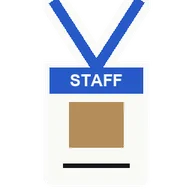

NIGHT
STOCKTAKE
Bis zu vier Nachtschichtler. Ein Soll. Ein Hypermarkt, der sich umräumt, sobald keiner hinsieht - und Dinge in den Regalen, die zurückschauen.

Der Trailer

Die Schicht

Zieh deinen Ausweis
Kauf Kundenkarten, mach deinen Spind schick, stempelt gemeinsam ein. Der Pausenraum ist der einzige sichere Ort im Gebäude.

Scannen, tragen, abliefern
Scanne Ware, schieb Wagen, trag mit einem Freund einen Kühlschrank. Jeder Artikel, der das Terminal erreicht, zählt zum Soll.

Raus um sechs
Erfülle das Soll und stempel aus, bevor der Markt Hunger bekommt. Zweimal verfehlt, und die ganze Crew ist gefeuert.

Features
 Der Markt bewegt sichLicht flackert, Regale räumen sich um, ganze Abteilungen tauschen die Plätze - aber nur, solange keiner hinsieht.
Der Markt bewegt sichLicht flackert, Regale räumen sich um, ganze Abteilungen tauschen die Plätze - aber nur, solange keiner hinsieht. Echte PhysikWackelige Wagen, fallende Ware, ein Kühlschrank für zwei - einer davon lenkt blind.
Echte PhysikWackelige Wagen, fallende Ware, ein Kühlschrank für zwei - einer davon lenkt blind. Sechs GefahrenJede jagt auf ihre eigene Art nach Geräuschen. Sie erwachen eine nach der anderen, je länger die Nacht dauert.
Sechs GefahrenJede jagt auf ihre eigene Art nach Geräuschen. Sie erwachen eine nach der anderen, je länger die Nacht dauert. Ein Plan, der lügtDeine Tablet-Karte ist eine Momentaufnahme. Je länger du ihr vertraust, desto falscher wird sie.
Ein Plan, der lügtDeine Tablet-Karte ist eine Momentaufnahme. Je länger du ihr vertraust, desto falscher wird sie. 85 StickerErfolge sind Sticker für deinen Ausweis und deinen Kartonkopf, von gewöhnlich bis LEGEN...DÄR.
85 StickerErfolge sind Sticker für deinen Ausweis und deinen Kartonkopf, von gewöhnlich bis LEGEN...DÄR. Sei ein KartonWechsle Köpfe (Pizzastapel, Röhren-TV, Popcorneimer), Hüte, Schuhe, Gesichter und Scanner-Skins.
Sei ein KartonWechsle Köpfe (Pizzastapel, Röhren-TV, Popcorneimer), Hüte, Schuhe, Gesichter und Scanner-Skins. Bezahlt wird GenauigkeitDein Lohn hängt von einer ehrlichen Zählung ab. Klebst du ein falsches Preisetikett, merkt der Markt es.
Bezahlt wird GenauigkeitDein Lohn hängt von einer ehrlichen Zählung ab. Klebst du ein falsches Preisetikett, merkt der Markt es.
Dein SpindStreich ihn, beklebe ihn, lass deine Crew in dein Stickeralbum schauen.Nicht anlegen
Sechs Dinge arbeiten mit dir in der Nachtschicht. Lerne, was jedes davon hört - und was es aufhält.


Screenshots


Streamen. Monetarisieren.
- Du darfst Videos von Night Stocktake auf jeder Plattform streamen, aufnehmen und monetarisieren.
- Keine Erlaubnis nötig - über einen Link zum Spiel in deiner Beschreibung freuen wir uns.
- Die Musik und Sounds des Spiels sind nicht bei Content ID registriert.
- Key Art, Logos, Screenshots und ein Factsheet findest du im Presse-Kit.
MARKTLEITUNG
FAQ
Wie viele Spieler?
1 bis 4 im Online-Koop. Solo geht auch, aber einen Kühlschrank allein zu tragen ist langsam und laut.
Plattformen und Release?
PC (Steam). Releasetermin und Preis verkünden wir auf Steam und in unserem Discord - setz das Spiel auf die Wunschliste, um benachrichtigt zu werden.
Gibt es Voice-Chat?
Proximity-Voice-Chat ist für den Steam-Release geplant. Bis dahin nutz deine liebste Voice-App.
Wie gruselig ist es?
Mehr schleichendes Grauen als Gore: flackerndes Licht, Dinge, die sich bewegen, wenn du wegschaust, plötzliche laute Geräusche. Eine Warnung zur Fotosensibilität und Optionen gegen Flackern sind im Spiel.
Darf ich es streamen?
Ja, und du darfst es monetarisieren. Siehe Creator-Richtlinie.
Sprachen?
Englisch, vereinfachtes Chinesisch, Russisch, brasilianisches Portugiesisch, Spanisch und Deutsch: Menüs, HUD und Untertitel.
Werde Teil der Nachtcrew
News, Playtests, Bugmeldungen und die Stickeralben anderer Leute.
0 gerade online in unserem Discord